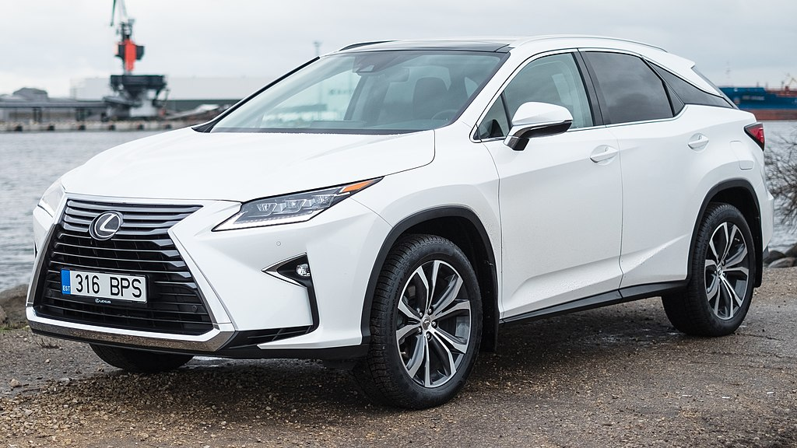

Lexus RN
 The Lexus RX is a luxury crossover SUV sold since 1998 by Lexus, a luxury division of Toyota. Originally released in its home market of Japan in late 1997 as the Toyota Harrier, export sales began in March 1998 as the Lexus RX. Considered as the first luxury crossover SUV, four generations of the RX have been produced to date, the first being compact in size, and the latter three classified as mid-size.
Lexus RX
The Lexus RX is a luxury crossover SUV sold since 1998 by Lexus, a luxury division of Toyota. Originally released in its home market of Japan in late 1997 as the Toyota Harrier, export sales began in March 1998 as the Lexus RX. Considered as the first luxury crossover SUV, four generations of the RX have been produced to date, the first being compact in size, and the latter three classified as mid-size.
Lexus LS
The Lexus RX is a luxury crossover SUV sold since 1998 by Lexus, a luxury division of Toyota. Originally released in its home market of Japan in late 1997 as the Toyota Harrier, export sales began in March 1998 as the Lexus RX. Considered as the first luxury crossover SUV, four generations of the RX have been produced to date, the first being compact in size, and the latter three classified as mid-size.
Lexus LFA
The Lexus RX is a luxury crossover SUV sold since 1998 by Lexus, a luxury division of Toyota. Originally released in its home market of Japan in late 1997 as the Toyota Harrier, export sales began in March 1998 as the Lexus RX. Considered as the first luxury crossover SUV, four generations of the RX have been produced to date, the first being compact in size, and the latter three classified as mid-size.